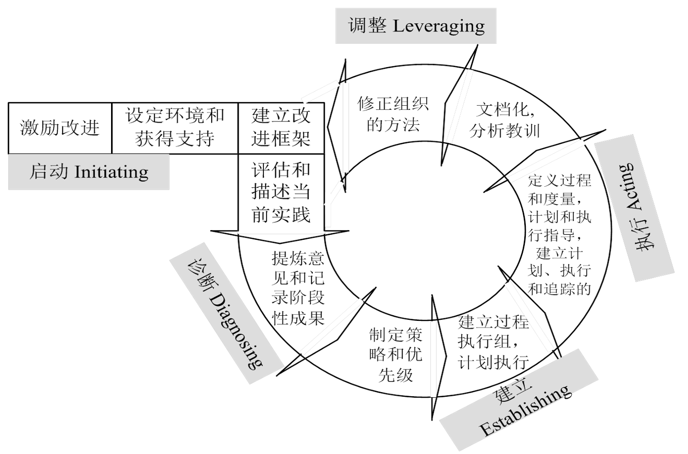
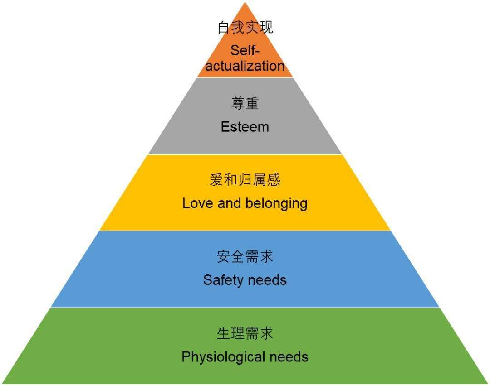
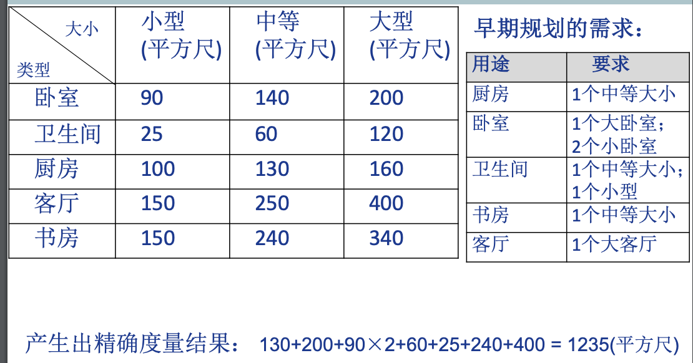
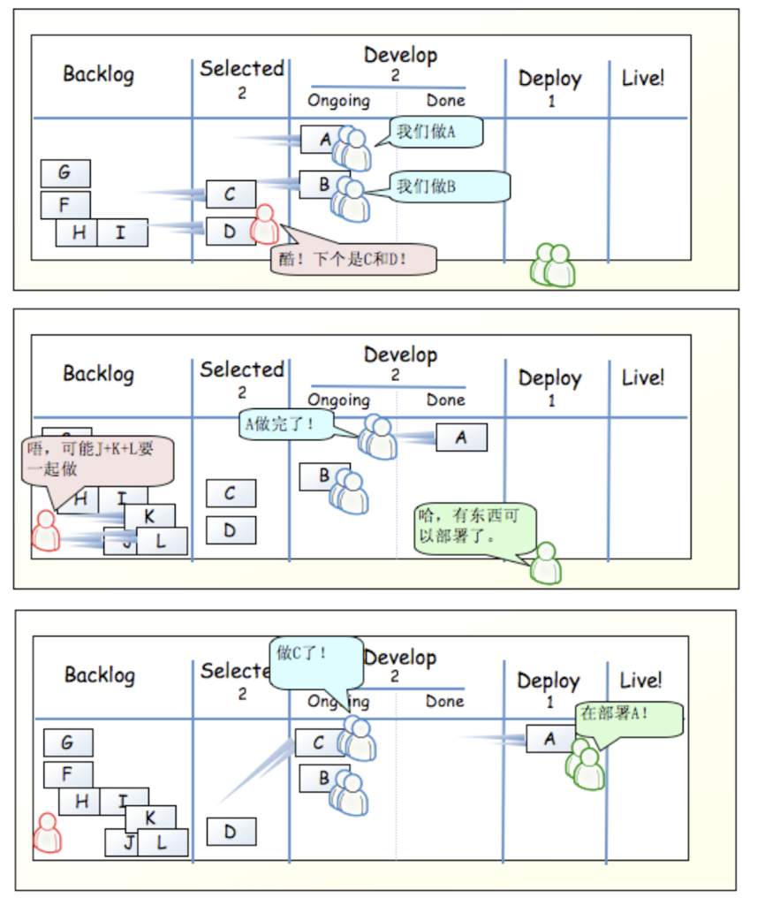

软件质量与管理
软件质量与管理整理
1. 概述
- 软件危机 重要
- 软件的四大本质困难和挑战（本质属性，驱动力）：复杂性、不可见性、可变性、一致性
- 软件危机是指落后的软件生产方式无法满足迅速增长的计算机软件需求，从而导致软件开发与维护过程中出现一系列严重问题的现象。
- 软件工程是一门研究用工程化方法构建和维护有效的、实用的和高质量的软件的学科。
- 软件工程的两大视角：管理视角（复制成功）、技术视角（将问题解决的更好）
- 软件项目管理概念(重要)
- 管理的三大关键要素：目标、状态(接近目标还是远离目标)、纠偏
- 软件项目管理是应用方法、工具、技术以及人员能力来完成软件项目，实现项目目标的过程。
- 软件过程
- 软件过程(狭义)：软件过程是为了实现一个或者多个事先定义的目标而建立起来的一组实践的集合
- 广义软件过程包括技术、人员以及狭义过程
- 生命周期模型与软件过程 重要
- 软件过程：是为了实现一个或者多个事先定义的目标而建立起来的一组实践的集合，这组实践之间往往有一定的先后顺序，作为一个整体来实现事先定义的一个或者多个目标
- 生命周期模型：对软件过程的一种人为的划分。典型生命周期模型：瀑布模型、迭代式模型、增量模型、螺旋模型、原型法等等
- 区别：
- 生命周期模型是对软件过程的一种人为划分
- 生命周期模型是软件开发过程的主框架，是对软件开发过程的一种粗粒度划分
- 生命周期模型往往不包括技术实践
- 如何理解瀑布模型 重要
- 瀑布模型不是单一模型，是一系列模型，覆盖最简单场景（过程元素少）到最复杂的场景（过程元素多）
- 软件项目应该结合实际情况选择合适过程元素的瀑布模型，基本原则是，项目面临困难和挑战越多，选择的模型应该越复杂
- 软件项目团队往往低估项目的挑战，选择了过于简单的不使用的瀑布模型
- 软件过程管理与软件项目管理
- 软件过程管理的管理对象是软件过程
- 管理的目的是为了让软件过程在开发效率、质量等方面有着更好性能绩效
- 软件过程管理与软件过程改进
- 两者意思接近
- 软件过程管理参考模型 CMM/CMMI, SPICE等
- 软件过程改进参考元模型 PDCA，IDEAL
- 以下说法是否正确？为什么？
- 软件过程管理是软件项目管理应该要实现的目标：软件过程管理和软件项目管理完全是两回事，因此并不是实现目标，错误的。
- 在公司导入敏捷过程是我们今年过程改进的主要目标：过程管理和过程改进是类似的，这个说法是合理的，正确的。
- XP与CMM/CMMI是对立的两种软件开发方法：CMM和CMMI并不是软件开发方法，而是软件过程管理和改进，CMM和CMMI是没有较大区别的，错误的。
- CMM/CMMI不适合当今互联网环境的项目管理需求：CMM/CMMI是用来做过程管理和改进的，根本不是满足项目管理需求的手段，错误的。
- PDCA和IDEAL不适合在敏捷环境中使用：PDCA，IDEAL是软件过程改进参考元模型，因此是适合在敏捷环境中使用的，错误的。
- 不同的软件开发过程应该使用不同的生命周期模型，反之亦如此：生命周期模型是由人类划分的，不一定，错误的。
2. 软件过程的历史演变和经典工作
- 软件发展三大阶段 重要
- 软硬件一体化阶段（50年代~70年代）：软件完全依附于硬件、软件作坊
- 线性顺序过程，事实上是硬件开发流程
- Measure twice, cut once
- Code and fix
- 软件成为独立的产品（70年代~90年代）
- 结构化程序设计和瀑布模型
- 成熟度模型
- 网络化和服务化（90年代中期迄今）
- 迭代式开发
- 敏捷开发（XP、SCRUM、Kanban）
- 开源软件开发方法
- DevOps
- 软硬件一体化阶段（50年代~70年代）：软件完全依附于硬件、软件作坊
- 软件完全依附于硬件
- 软件应用典型特征：软件支持硬件完成计算任务、功能单一、复杂度有限、几乎不需要需求变更
- 软件开发典型特征：硬件太贵、团队以硬件工程师和数学家为主
- 典型软件过程和实践：Measure twice, cut once（相同的软件工程实践：code review & inspection）
- 软件作坊
- 软件应用典型特征：功能简单、规模小
- 软件开发典型特征：很多非专业领域的人员涌入、高级程序语言出现、质疑权威文化盛行
- 典型软件过程和实践：Code And Fix
软件成为独立产品
- 软件应用典型特征：摆脱了硬件束缚（OS）、功能强大、规模和复杂度剧增、个人电脑出现使普通人成为软件用户、来自市场的压力
- 软件典型过程和实践：形式化方法、结构化设计+瀑布模型
- 瀑布模型与生命周期模型
- 第一张图为瀑布模型，图二为简化的软件生命周期阶段
- 生命周期模型
- 是什么：一个对软件过程的人为划分
- 主要作用：便于传达，复制成功
下面是各种软件过程改进模型
成熟度模型 重要
- 最开始是CMM，现在是CMMI
- CMM（Capability Maturity Model），即软件能力成熟度模型，是一种评估和提高组织软件工程能力的标准体系。它可以帮助组织了解自身软件开发过程的成熟度，指导其逐步改进和优化软件开发流程，提高软件产品质量和开发效率。
- CMMI（Capability Maturity Model Integration），即软件成熟度模型集成，是一个过程改进模型，旨在帮助组织改进其软件开发和维护过程。CMMI可以看作是CMM的进化版，它扩展了CMM的领域和深度，提供了更全面的过程改进框架。它不仅覆盖了软件开发领域，还涉及了系统工程、硬件开发和服务业务等。
- CMMI成熟度分级
- 初始级(Initial)：过程不可预测、项目管理很少、开发相对混乱；个人英雄主义、救火文化
- 已管理级(Managed)：以项目为单位进行管理，相对被动的管理；有项目计划和跟踪、需求管理、配置管理等
- 已定义级(Defined)：以公司为单位进行管理，相对主动的管理；公司层面有标准流程和相应规范，每个项目小组可以基于此定义自己的流程
- 定量管理级(Quantitatively Managed)：过程被度量和管理；构建预测模型，用统计过程控制的手段来管理过程
- 优化级(Optimizing)：关注与过程改进；继续应用统计方法识别过程偏差，找到问题根源并消除，避免未来继续发生类似问题
PDCA：软件过程改进模型 重要
- PDCA：Plan、Do、Check、Action
IDEAL：软件过程改进模型 重要
- IDEAL模型解决了软件在各种质量改进环境下的需要
- 
其他模型
- SPICE模型：软件过程管理模型
- ISO/IEC：软件过程改进模型
- RUP Rational Unified Process：软件过程框架
讨论题
- CMMI是过程改进模型而非软件过程或者软件过程模型（正确，CMMI指导软件过程改进，不指导开发。）
- CMMI不是过程优劣的标准，也不适合用作公司之间的能力比较（正确，CMMI衡量的是相对的水平，CMMI仅仅关注在本公司的目标下的等级）
- 如何理解CMMI VS. Agile（敏捷）？CMMI 和 Agile 都是用于软件过程管理的模型，它们不是对立的。虽然两者在方法和理念上存在差异，但在实际环境中，这两种方法可以互补，帮助组织实现目标。
网络化和服务化
- 软件应用典型特征
- 功能更复杂，规模更大
- 用户数量急剧增加
- 快速演化和需求不确定
- 分发方式的变化（SaaS，软件即服务，是一种通过Internet提供软件的模式）
- 典型软件过程和实践
- 迭代式：大型软件系统的开发过程也是一个逐步学习和交流的过程，软件系统的交付不是一次完成，而是通过多个迭代周期，逐步来完成交付。
- 雪鸟会议和敏捷宣言
- 个体和互动胜过流程和工具
- 可以工作的软件胜过详尽的文档
- 客户合作胜过合同谈判
- 响应变化胜过遵循计划
- 也就是说，尽管右项有其价值，我们更重视左项的价值。
- 敏捷软件开发方法：
- XP（eXtreme Programing） 方法：偏重于一些工程实践的描述
- SCRUM：管理框架和管理实践
- Kanban
- 精益生产（丰田制造法）的具体实现
- 可视化工作流、限定WIP、管理周期时间
- 马丁提出了微服务架构
- 开源软件开发方法：是一种基于并行开发模式的软件开发的组织与管理方式
- Linus 定律：如果有足够多的beta测试者和合作开发者，几乎所有问题都会很快显现，然后自然有人会把它解决。
- 早发布，常发布，倾听用户的反馈 、把你的用户当成开发合作者对待
- 代码管理：严格的代码提交社区审核制度
当前软件发展现状
软件应用典型特征
- 进一步服务化和网络化(移动是主流)
- 用户需求多样化进一步凸显
- 软件产品和服务的地位变化
- 错综复杂的部署环境
近乎苛刻的用户期望
- 多：功能丰富，个性化
- 快：快速使用，及时更新，快速解决问题
- 好：稳定，可靠，安全，可信
- 省：用户的获得成本低，最好免费
空前强大的开发和部署环境——XaaS
盛行共享和开源
典型DevOps实践和方法
- 方法论基础是敏捷软件开发、精益思想以及看板Kanban方法。
- 以领域驱动设计为指导的微服务架构方式
- 大量虚拟化技术的使用
- 一切皆服务XaaS(X as a Service)的理念指导
- 构建了强大的工具链，支持高水平自动化
3. 团队动力学
三大目标 重要：成本、质量、工期
软件开发特点 （结合软件开发特点谈谈自主型团队的必要性）
- 软件开发是一项既复杂又富有创造性的知识工作
- 软件开发是一种智力劳动
- 处理和讨论极其抽象的概念
- 把不同的部分（不可见）整合成一个可以工作的系统
- 全身心地参与
- 努力做出卓越的工作
- 软件开发是一种智力活动，开发者是智力劳动者，而对于智力劳动者而言，管理的第一准则，就是智力劳动者不能被管理，只能实现自我管理。
知识工作管理 重要
- 管理知识工作的关键规则是：管理者无法管理工作者，知识工作者必须实现并且学会自我管理。
- 要自我管理，知识工作者必须(如下是自我管理的前提条件)
- 有积极性：不然可能会被其他人替代
- 能做出准确的估算和计划
- 懂得协商承诺
- 有效跟踪他们的计划
- 持续地按计划交付高质量产物
知识工作的领导者 重要
知识工作者的管理需要的是领导者，而不是经理
特点：
- 善于倾听团队成员的想法，并加以分析和改进
- 善于通过询问来诱导团队成员向着正确的方向前进
- 善于通过激励以及设定挑战目标等方式吸引团队成员努力表现
- 当出现不一致意见的时候，领导者则善于提供各种沟通方式，促成团队达成一致意见
- 培养团队成员技能
- 鼓励建立起合理的授权机制
- 通过挑战建立目标，确定团队努力方向
领导者的激励手段 重要
- 有3种主要的激励方式：
- 威逼
- 利诱
- 鼓励承诺：位于马斯洛需求理论的4级以上，应当是主要的方式，并且最好以团队为单位做承诺
- 鼓励承诺效果最好
- 交易型领导方式
- 承诺奖励激励
- 人们通常能找到新的方式来获得奖励，同时少做工作。
- 威逼和利诱属于交易型领导方式。
- 转变型领导方式
- 用成就激励
- 鼓励承诺属于转变型领导方式。
- 由于交易型领导方式很少能产生成功的并且有创造性的团队，因此转变型领导方式是首选。
- 有3种主要的激励方式：
马斯洛的需求理论 重要
- 
注：第三层ppt中是social社交需求，图是网上找的
自我实现是最高的层次
激励来自为没有满足的需求而努力奋斗
低层次的需求必须在高层次需求满足之前得到满足
满足高层次的需求的途径比满足低层次的途径更为广泛
期望理论 重要
人们在下列情况下能够受到激励并且出大量成果 M = V * E
- 相信自己会因为成功得到相应的回报(V)
- 相信他们的努力很可能会产生成功的结果(E)
Motivation = Valence x Expectancy(Instrumentality)，即激发力量 = 效价 * 期望值
- M 表示激发力量，是指调动一个人的积极性，激发人内部潜力的强度。
- V 表示目标价值（效价），这是一个心理学概念，是指达到目标对于满足他个人需要的价值。同一目标，由于各个人所处的环境不同，需求不同，其需要的目标价值也就不同。同一个目标对每一个人可能有三种效价：正、零、负。效价越高，激励力量就越大
- E 是期望值，是人们根据过去经验判断自己达到某种目标的可能性是大还是小，即能够达到目标的概率。目标价值大小直接反映人的需要动机强弱，期望概率反映人实现需要和动机的信心强弱。
自主团队 重要
- 内部环境（特点）
- 自行定义项目的目标
- 自行决定团队组成形式以及成员的角色
- 自行决定项目的开发策略
- 自行定义项目的开发过程
- 自行制定项目的开发计划
- 自行度量、管理和控制项目工作
- 外部环境
- 项目启动阶段获得管理层的支持：
- 在项目进展过程中获得管理层的支持
- TSP(Team Software Process)：团队软件过程
TSP角色与职责 重要
- 项目组长（项目经理）：建设和维持高效率的团队
- 激励团队成员努力工作
- 主持项目周例会
- 每周汇报项目状态
- 分配工作任务
- 维护项目资料
- 组织项目总结
- 计划经理：开发完整的、准确的团队计划和个人计划
- 带领项目小组开发项目计划
- 带领项目小组平衡计划
- 跟踪项目进度
- 参与项目总结
- 开发经理：开发优秀的软件产品
- 带领团队制定开发策略。
- 带领团队开展产品规模估算和所需时间资源的估算。
- 带领团队开发需求规格说明。
- 带领团队开发高层设计。
- 带领团队开发设计规格说明。
- 带领团队实现软件产品。
- 带领团队开展集成测试和系统测试。
- 带领团队开发用户支持文档。
- 参与项目总结
- 质量经理：保证项目团队严格按照质量计划开展工作，开发出高质量的软件产品
- 带领团队开发和跟踪质量计划
- 向项目组长警示质量问题
- 软件产品提交配置管理之前，对其进行评审，以消除质量问题
- 项目小组评审的组织者和协调者
- 参与项目总结
- 过程经理：维护所有团队成员准确的记录、报告和跟踪过程数据
- 带领团队定义和记录开发过程并且支持过程改进。
- 建立和维护团队的开发标准。
- 记录和维护项目的会议记录。
- 参与项目总结。
- 支持经理：保证项目小组在整个开发过程中都有合适的工具和环境
- 带领团队识别开发过程中所需要的各类工具和设施。
- 主持配置管理委员会，管理配置管理系统。
- 维护软件项目的词汇表。
- 维护项目风险和问题跟踪系统。
- 支持软件开发过程中复用策略的应用。
- 参与项目总结。
- 开发人员：开发
TSP启动过程 重要
第一次和第二次会议由项目经理主持
第三次会议
- TSP灵活：自定义的流程让人相信项目可以成功
- 开发策略：打算进行几个迭代周期。
Scrum角色和职责见邵栋部分 重要
4. 估算和计划
估算目的 重要：估算目的是给各类计划提供决策依据
PROBE估算方法 重要
规模度量/估算的困境
- 精确度量方式往往不便于早期规划/估算；
- 有助于早期规划/估算的度量往往难以产生精确度量结果；
PROBE(PROxy Based Estimation)的作用：精确度量和早期规划之间的桥梁
要做的估算：规模估算和资源估算
基本原理：设立合理的代理作为精确度量和早期规划之间的桥梁；相对大小而非绝对大小
例子：估算一栋房屋的建造成本，大部分人没有概念。然而，在早期规划中，会有如下认识/需求
序号 用途 相对大小及数量 1 厨房 1个中等大小 2 卧室 1个大卧室；2个小卧室 3 卫生间 1个中等大小；1个小型 4 书房 1个中等大小 5 客厅 1个大客厅 相对大小矩阵：
- 
PROBE估算流程
概要设计
- 估算的第一步是做出一个概要设计
- 为了做出概要设计，需要确定产品功能，以及产生这些功能所需的程序组件/模块
- 然后，将这些程序组件/模块与你以前写的程序相比较，估算它们的规模
- 最后，将程序组件/模块估算综合给出总规模
估算要点 重要
- 尽可能划分详细一些
- 建立对结果的信心
- 依赖数据
- 估算要的是过程，而非结果；估算的过程是相关干系人达成一致共识的过程
Scrum故事点 重要
- 度量实现一个故事（Story）需要付出的工作量
- 抽象的：混合了对于开发特性（feature）所要付出的努力、开发复杂度、个中风险以及类似东西
- 相对的：设定标准之后，考虑其他特性（feature）与标准之间的相对大小关系
- Fibonacci: 0, 1, 1, 2, 3, 5, 8, 13, 21,34, 55, 89
- 度量实现一个故事（Story）需要付出的工作量
工作分解结构 WBS
开发策略与计划
- 开发策略是在产品组件需求基础之上，明确每个产品组件的获得方式与顺序，从而在项目团队内部建立起大家都理解的产品开发策略。
- 注意事项
- WBS的使用
- 产品组件开发顺序的考虑
- 产品组件获得方式的考虑
通用计划框架 重要
- 必须人为干预的步骤
- 定义需求
- 概要设计：划分由人为开始，规模划分好之后估算是自动产生的
- 日程计划
- 这会带来什么的好处？比较容易扛住别人的质疑。
- 攻击点：资源和时间是否被高估了
- 解决：估算没有代码行PROBE只有功能点是大中小。
- 必须人为干预的步骤
质量计划 重要
- 项目的质量计划中应当确定需要开展的质量保证活动。
- 典型的质量保证活动包括个人评审、团队评审、单元测试、集成测试、系统测试以及验收测试等。
- 在质量计划中需要解决的关键的问题是该开展哪些活动，以及这些活动开展的程度，如时间、人数和目标分别是什么。
风险计划 重要
- 风险管理的目的是在风险发生前，识别出潜在的问题，以便在产品或项目的生命周期中规划和实施风险管理活动，以消除潜在问题对项目产生的负面影响。
- 风险管理大致分成两部分，即风险识别和风险应对。
挣值管理体系 重要
项目的挣值管理方法(Earned Value Management，简称EVM)是用来客观度量项目进度的一种项目管理方法。
- 每项任务实现附以一定价值（credit）
- 100%完成该项任务，就获得相应价值
EVM采用与进度计划、成本预算和实际成本相联系的三个独立的变量，进行项目绩效测量。
- 简单实现：添加挣值（EV）
- 中级实现：添加成本线（AC）
- 高级实现：添加预测线（BAC），当任务足够多的时候，我们就可以让预测线尽可能平直，同时我们延伸挣值（EV），找到与预测线（BAC）的交点，我们就可以明确项目的落后时间
分析图示
- 上面的线是为了获取这些挣值付出的实际代价，这个线和挣值之间的差异是成本差异。
- 中间的线是预算（每天需要完成多少挣值）BAC，理想情况下是一条直线。
- 下面的线是挣值（实际的进展情况）（EV），和owner value有关，对应plan value
EVM的变形：燃尽图
- 燃尽图是简单的挣值管理的变形。
- 是剩下的工作占的百分比
EVM的局限性
一般不能应用软件项目的质量管理。
需要定量化的管理机制
完全依赖项目的准确估算，然而在项目早期，很难对项目进行非常准确的估算
挣值管理为什么能适应软件项目：它能够将项目进度和成本结合起来，通过量化的方式动态跟踪项目实际完成情况（挣值）与计划进度和预算的对比，及时发现偏差，便于软件项目灵活调整和有效控制进度与成本，提高可控性和透明度。
5. 质量管理
- 质量概念
- 软件质量为“与软件产品满足规定的和隐含的需求能力有关的特征或者特性的全体”。
- 软件质量为内外两部分的特性：其外部质量特性面向软件产品的最终用户，其内部质量特性则不直接面向最终用户。
- 用户满意度是最为重要的判断标准，对同一款软件而言，不同的用户对其质量有不同的体验。
- 面向用户的质量观 重要
- 面向用户的质量观，定义质量为满足用户需求的程度。在这个定义中，就需要进一步明确：
- 用户究竟是谁？
- 用户需求的优先级是什么？
- 这种用户的优先级对软件产品的开发过程产生什么样的影响？
- 怎样来度量这种质量观下的质量水平？
- 面向用户的质量观，定义质量为满足用户需求的程度。在这个定义中，就需要进一步明确：
- 质量管理策略 重要
- 用缺陷管理来替代质量管理
- 高质量产品也就意味着要求组成软件产品的各个组件基本无缺陷；
- 测试消除缺陷典型流程
- 发现待测程序的一个异常行为；
- 理解程序的工作方式；
- 调试程序，找出出错的位置，确定出错原因；
- 确定修改方案，修改缺陷；
- 回归测试，以确认修改有效；
- 评审发缺陷典型流程
- 遵循评审者的逻辑来理解程序流程；
- 发现缺陷的同时，也知道了缺陷的位置和原因；
- 修正缺陷
- PSP：个人软件过程
- 个人评审 重要
- 关键控制因素：单元测试和code review，code review优先
- 时机选择：编译（UT）之前 VS. 之后
- 小组评审是由多人组成的小组共同进行的评审活动，其核心目的是通过小组讨论、集体智慧，对项目的流程和过程进行质量把控，确保过程符合质量要求，及时发现和纠正问题，从而提升整体质量管理水平。
- 质量控制指标 重要
- 指标一：Yield（良品率）
- Yield指标用以度量每个阶段在消除缺陷方面的效率。
- Phase Yield = 100 * (某阶段发现的缺陷个数)/(某阶段注入的缺陷个数+进入该阶段前遗留的缺陷个数)
- Process Yield = 100 * (第一次编译前发现的缺陷个数)/(第一次编译前注入的缺陷个数)；
- 指标二：A/FR
- A/FR = PSP质检成本/PSP失效成本
- 帮助团队权衡投入评审、测试等质量活动的成本与后期失效所带来的代价
- 理论上，A/FR的值越大，往往意味着越高的质量。
- 过高的A/FR往往意味着做了过多的评审，反而会导致开发效率的下降。
- 指标三：PQI
- 用于综合反映开发过程中缺陷的密度水平，5个数据乘积(定义成0.0~1.0之间的数值)(以基准值作为1，最后结果越接近1质量越⾼)
- 5个数据
- 设计质量：min{设计时间/编码时间, 1}
- 设计评审质量：min{(2 * 设计评审时间 / 设计时间), 1}
- 代码评审质量：min{(2 * 代码评审时间)/编码时间 , 1}
- 代码质量：min{20/(编译缺陷密度 + 10), 1}
- 程序质量：min{10/(单元测试缺陷密度 + 5), 1}
- 指标四：Review Rate
- 评审的速度(Review Rate)是一个用以指导软件工程师开展有效评审的指标
- 高质量的评审需要软件工程师投入足够的时间进行评审
- 指标五：DRL
- 缺陷消除效率比度量的是不同缺陷消除手段消除缺陷的效率。
- 其计算方式是以某个测试阶段（一般为单元测试）每小时发现的缺陷数为基础，其他阶段每小时发现缺陷数与该测试阶段每小时发现的缺陷的比值就是DRL。
- 特点和用途：
- Yield：衡量各阶段发现缺陷的能力，用于分析流程质量控制效果。
- A/FR：比较预防成本与失效成本，用于评估质量投入的经济性。
- PQI：反映开发过程中的缺陷密度，用于整体质量评估。
- Review Rate：衡量评审效率，用于指导合理评审节奏。
- DRL：比较不同方法的缺陷发现效率，用于优化缺陷检测手段。
- 指标一：Yield（良品率）
下面是sd部分
1. Scrum
前置
定义
- Scrum 不是构建产品的一种过程或一项技术，而是一个框架，在这个框架里可以应用各种流程和技术。Scrum 能使产品管理和开发实践的相对功效显现出来,以便随时改进。
- Scrum 是一个轻量的框架，它通过提供针对复杂问题的自适应解决方案来帮助人们、团队和组织创造价值
- 简而言之，Scrum 需要 Scrum Master 营造一个环境，从而：
- 一名 Product Owner 将解决复杂问题所需的工作整理成一份 Product Backlog。
- Scrum Team 在 一个 Sprint 期间将选择的工作转化为价值的 Increment
- Scrum Team 和利益攸关者检视结果并为下一个 Sprint 进行调整
- 重复
- Scrum 基于经验主义和精益思维。 经验主义主张知识源自实际经验以及根据当前观察到的事物作出的判断所获得。
Scrum Team
Scrum Team 由一名 Scrum Master，一名 Product Owner 和 Developers 组成
在 Scrum Team 中，没有子团队或层次结构
Scrum Team 规模足够小以保持灵活，同时足够大以便可以在 一个 Sprint 中完成重要的工作，通常只有 10 人或更少
Scrum Team 是跨职能的，这意味着团队成员具有在每个 Sprint 中创造价值而所需的全部技能（反例：职能团队，UI团队、业务逻辑团队、测试团队等等）
微观管理：在对员工的工作管理中，管理者过度关注和控制工作细节的管理风格和管理行为。会导致团队成员失去主观能动性、工作中出现决策等待和低效、影响到团队的积极性和士气
自管理：指个体或团队在明确目标下，通过自我规划、自我监督、自我调整等方式，自主完成任务的机制。
自组织：指复杂系统（如生态系统、社会组织）在没有外部指令干预的情况下，通过内部成员或元素的互动，自发形成有序结构和功能的过程。
用户故事
- 用户故事是产品列表的基础构件
- 告诉我们想要这个功能的是谁、预期功能是什么 、为什么用户想要这个功能
- 用户故事不是完整的需求或说明书，它们是占位符，足以提醒团队有东西要完成
- 用户故事地图：是一门在需求拆分过程中保持全景图的技术。敏捷软件开发中使用用户故事地图来发现、管理需求
Definition of Done(DoD)
- DoD用于描述一个用户故事、任务或功能何时可以被认为真正“完成”。它是团队对完成工作的标准化定义，确保开发过程中每个增量都符合质量要求并准备好交付。
- 作用：提高透明度、保证质量、支持验收流程、防止技术债
行为驱动开发 BDD
- 是一种基于敏捷的软件开发方法论，其核心思想是通过定义软件的行为来驱动开发过程
- BDD 是从测试驱动开发（TDD）演化而来的，强调在开发开始之前，用自然语言描述软件应如何行为
- 过程：编写用户故事 -> 定义验收标准
Sprint 管理：白板Scrum任务板
Sprint进度跟踪：燃尽图
Scrum
Scrum 33355（重要）
- 三大支柱：透明、检视、适应
- 三个角色：开发人员(Developers)、产品负责人（Product Owner）、Scrum主管(Scrum Master)
- 三个工件：Product Backlog、Sprint Backlog、增量(Increment)
- 五个价值：承诺、专注、开放、尊重和勇气
- 五个事件：Sprint、Sprint 计划会议(Sprint Planning)、每日 Scrum 会议(Daily Scrum)、Sprint 评审会议(Sprint Review)、Sprint 回顾会议(Sprint Retrospective)
三大支柱
- 透明：开发的过程和工作必须对执行工作的人员和接受工作的人员都是可见的。在 Scrum 中，重要的决策是基于其 3 个正式工件的感知状态。透明使检视成为可能。没有透明的检视会产生误导和浪费。
- 检视：Scrum 工件和实现商定目标的进展必须经常地和勤勉地检视，以便发现潜在的不良的差异或问题。为了帮助检视，Scrum 以 5 个事件的形式提供了稳定的节奏。检视使适应成为可能。没有适应的检视是毫无意义的。
- 适应：如果过程的任何方面超出可接受的范围或所得的产品不可接受，就必须对当下的过程或过程处理的内容加以调整适应，而且调整工作必须尽快执行。
三个角色
- Developers：致力于创建每个 Sprint 可用 Increment 的任何方面的人员。所需的特定技能通常很广泛，并且会随着工作领域的不同而变化。职责：
- 为 Sprint 创建计划，即 Sprint Backlog
- 通过遵循 Definition of Done 来注入质量
- 每天根据 Sprint Goal 调整计划
- 作为专业人士对彼此负责
- Product Owner：负责将 Scrum Team 的工作所产生的产品价值最大化。职责：
- 开发并明确地沟通 Product Goal
- 创建并清晰地沟通 Product Backlog 条目
- 对 Product Backlog 条目进行排序
- 确保 Product Backlog 是透明的、可见的和可理解的
- Scrum Master：负责按照 Scrum 指南的规则来建立 Scrum团队，对 Scrum Team 的效能负责。他们通过帮助 Scrum Team 和组织内的每个人理解 Scrum 理论和实践来做到这一点。职责：
- 作为教练在自管理和跨职能方面辅导 Scrum Team 成员
- 帮助 Scrum Team 专注于创建符合 Definition of Done 的高价值 Increment
- 促使移除 Scrum Team 工作进展中的障碍，包括协调团队与利益相关者
- 确保所有 Scrum 事件都发生并且是积极的、富有成效的，并且在时间盒（timebox）内完成
- 帮助Product Owner有效定义 Product Goal 和管理 Product Backlog
- Developers：致力于创建每个 Sprint 可用 Increment 的任何方面的人员。所需的特定技能通常很广泛，并且会随着工作领域的不同而变化。职责：
三大工件
Product Backlog
- 是Scrum的核心，是按重要性排序的需求或故事（Story）的列表（客户语言描述的客户需求）
- 能够被 Scrum Team 在一个 Sprint 中完成（Done）的 Product Backlog 条目被认为准备就绪，在Sprint Planning 事件中可供选择。
- Product Backlog 精化是将 Product Backlog 条目分解并进一步定义为更小更精确的行为
- Product Owner必须参加计划会议
Sprint Backlog
- 一个为当前Sprint准备的任务列表，开发团队负责如何实现这些任务
Increment
- 每次Sprint结束后交付的工作，应该是“完成”(Done)的并具备可用性
五个价值
- 承诺：专注目标
- 专注：聚焦Sprint任务
- 开放：坦诚面对挑战
- 尊重：认可成员能力
- 勇气：解决棘手问题
五个事件
- Sprint
- Sprint 是 Scrum 的核心，在这里创意转化为价值
- 它们是固定时长的事件，为期一个月或更短，以保持一致性。前一个 Sprint 结束后，下一个新的Sprint 紧接着立即开始
- 实现 Product Goal 所需的所有工作，包括 Sprint Planning、Daily Scrum、Sprint Review 和 Sprint Retrospective，都发生在 Sprint 内
- 当前，Scrum 周期通常为2个星期（重要）
- Sprint Planning
- 所有人都可以编写添加条目，但只有Product Owner才能决定优先级
- 会议目标：sprint目标、团队成员名单、Sprint backlog(故事列表)、确定好sprint演示日期、确定时间地点(用于每日Sprint会议)
- 每个故事都含有三个变量：范围(scope)、重要性(importance)、和估算 (estimate)
- Story point（故事点）：是一种用于评估和比较用户故事（User Story）或开发任务相对复杂性、难度和工作量的度量单位。选取可识别的最小用例为2个story point，其它估算都是相对值，在所有sprint中保持该相对值一致
- 例子：我们一个迭代周期可以完成20个story point,则我们可以按照优先级顺序在现有product backlog中选取20个story point以内的user story放在本迭代周期内完成。
- 估算方法：扑克估算法、金发女孩估算法
- Daily Scrum每日站会
- 回答三个问题：昨天做了什么、今天准备做什么、遇到了什么障碍需要其他人如何帮你
- 移动任务板上的即时贴到对应的地方
- 每日例会一结束就要计算剩余工作故事点并更新燃尽图
- Sprint Review 评审会议
- 也叫Sprint演示会议，内容是演示你的Scrum团队做的东西
- Sprint Retrospective 回顾会议
- Sprint回顾是仅次于Sprint计划会议的第二重要的事件
- 主题：我们怎样才能在下个Sprint中做的更好，不是追究责任
- Sprint
Scrum的局限
- 没有具体实践
- Scrum关注项目管理和团队过程，而XP侧重工程实践和代码质量
Scrum的核心优势
- 轻量灵活：仅定义必要规则，兼容多种实践
- 持续改进：通过事件循环实现经验反馈
- 价值驱动：以Product Goal为导向，确保交付有效性
- 协作透明：跨角色协作，信息共享最大化
Scrum相关的框架实践
- 大规模敏捷SAFe ：SAFe（Scaled Agile Framework），融合了敏捷和精益思想，为大企业提供一个分层次的敏捷实施蓝图。它定义了团队层等层级，强调通过统一节奏和里程碑来协调多个团队
- LeSS(Large-Scale Scrum)：仅在一个产品待办列表下扩展多个Scrum团队，尽量减少额外角色
2. XP背景和变更曲线
- 极限编程（XP）作为一种敏捷开发方法诞生于20世纪90年代后期的软件工程实践。其主要创始人是Kent Beck
- 最近Scrum成为最主流的敏捷框架，而XP作为一个完整的方法使用相对减少。不过，XP的许多实践（如结对编程、测试驱动开发、持续集成等）已经被广泛接受，并常与Scrum等组合使用
- XP的步骤
- 编写代码
- 运行所有测试用例
- 迭代测试用例和代码
- 如果需要，进行重构
- 集成，包括集成测试
- 说明
- 程序员两两结对编程。
- 开发由测试驱动。
- 结对编程不仅仅是让测试用例运行起来。结对编程为系统的分析、设计、实现和测试增加价值。
- 开发后立即进行集成，包括集成测试
- 变更成本曲线
- 软件工程的一个普遍假设是，随着时间的推移，更改程序的成本呈指数增长。在一段软件中修复一个问题的成本会随时间呈指数增长。这导致传统方法强调“早期做好一切”，试图避免后期修改。
- XP认为变更成本曲线可以变平
- XP的技术前提
- 如果变更成本随时间缓慢上升，你的行为将与在成本呈指数增长这一假设下的行为完全不同
- 你会在工作中尽可能晚地做出重大决策，以推迟做出决策的成本，并使决策正确的可能性尽可能大
- 你只会实现必须实现的内容
- 只有当简化现有代码或使编写下一段代码更简单时，你才会将这些设计元素引入代码中
- 降低变更成本的技术：面向对象、简单设计、自动化测试、重构技术、CICD
3. XP实践
一些基本知识
- XP价值观：交流（Communication）、简单（Simplicity）、反馈（FeedBack）、勇气（Courage）
- 极限编程（XP）强制要求的沟通方式：单元测试、结对编程、任务估算
- XP方法论主张——今天采用简单方案实施，明日若有需要再付出少许额外成本进行迭代优化，远胜于当下就构建可能永远派不上用场的复杂方案
- 反馈
- 即时反馈（分钟/天级）
- 程序员：单元测试
- 客户：实时估算
- 团队：进度跟踪反馈
- 中长期反馈（周/月级）
- 客户：功能测试
- 运行软件验证
- 即时反馈（分钟/天级）
- 反馈与其他价值的联系
- 反馈增强沟通有效性
- 简单系统更易测试
- 测试驱动系统简化
- 勇气
- 简单设计→适度复杂→再简化
- 沟通支持勇气，因为它为更多高风险、高回报的实验开辟了可能性
- 简洁支持勇气，因为对于一个简单的系统，你可以更加勇敢
- 具体的反馈支持勇气，因为如果你按下一个按钮就能看到测试变绿，那么你在对代码进行激进的修改时会感到更加安全
- 软件开发的基本活动内容：开发的四项基本活动是编码、测试、倾听和设计
- 编码：你工作的成果
- 测试：
- 当所有可能的测试用例均已通过且无法再设计出新的失败场景时，即可视为完全完成
- 长期来看，为什么要测试的答案是测试能让程序的寿命更长；短期原因是提供信心
- 我们将有程序员编写的单元测试，以使他们自己确信他们的程序按照他们认为的方式工作
- 我们还将有由客户编写（或至少由客户指定）的功能测试，以使他们自己确信整个系统按照他们认为的整个系统应有的方式工作
- 倾听：程序员请业务人员说明项目的需求，帮助业务人员了解软件方面哪些容易，哪些困难
- 设计
- 良好的设计会组织逻辑，以便系统的一部分发生变化并不总是需要系统的另一部分发生变化
- 良好的设计确保系统中的每一段逻辑都有且仅有一个实现位置
- 良好的设计将逻辑放在它所操作的数据附近
- 良好的设计允许系统扩展，且仅在一个地方进行更改
XP基本实践
- 计划游戏 Planning Game
- 业务人员需要决定：问题范围、优先级、发布的组成、发布日期
- 技术人员决定以下事项：估算（实现功能需要的时间）、后果（技术后果）、流程（团队和工作的组织）、详细的日程安排
- 缺陷：你不可能仅凭一个粗略的计划就开始开发工作，不断地更新计划耗时太长
- 小发布 Small Releases
- 每次发布都应尽可能小，包含最有价值的业务需求
- 发布必须作为一个整体有意义
- 隐喻 Metaphor
- 每个极限编程（XP）软件项目都由一个总体隐喻来指导
- 在极限编程中，这个隐喻取代了许多其他人所说的 “架构”
- 选择一个系统隐喻，通过一致地命名类和方法让团队保持同步
- 例如搜索引擎 —— 一大群蜘蛛，在网上四处寻找要捕捉的东西，然后把东西带回巢穴
- 简单设计 Simple Design
- 运行所有测试
- 没有重复的逻辑
- 表明对程序员重要的每一个意图
- 具有尽可能少的类和方法
- 测试 TDD：程序员编写单元测试，客户编写功能测试
- 重构 Refactoring：在实现程序功能时，程序员总是会问是否有办法改变现有程序，以使添加该功能变得简单
- 重构是在不改变代码外部可见行为的前提下，持续优化代码内部结构的技术
- 采用简洁的设计，重构起来更加容易
- 有测试，所以不太可能在不知情的情况下破坏原有功能
- 有持续集成，所以如果不小心在某个环节破坏了原有功能，或者你们的重构与他人的工作发生冲突，几个小时内就能知晓
- 结对编程
- 所有生产代码的过程中，都有两个人盯着一台机器，共用一个键盘和一个鼠标
- 其中一个人，即手握键盘和鼠标的那位，思考的是在此处实现这个方法的最佳方式
- 另一个人则从更具战略性的角度思考
- 代码集体拥有制 Collective Ownership
- 任何人若发现有机会为代码的任何部分增加价值，都应随时这么做
- 无所有权模式：没有任何人拥有特定的某段代码。如果有人想修改代码，就会按照自己的目的去改，而不管修改后的代码与现有代码是否契合。
- 个人代码所有权模式：只有代码的正式所有者才能修改某段代码
- 持续集成 Continuous Integration
- 代码在几小时内 —— 最多一天的开发时间内 —— 完成集成与测试
- 少量变更的持续集成能快速定位问题：若测试失败，责任明确归属于当前集成人员，因上一轮集成已确保测试通过
- 40 小时工作制 40-Hour Week
- 现场客户 On-Site Customer：真正的客户必须与团队坐在一起，随时解答问题、解决争议并确定小规模的优先级
- 编码标准 Coding Standards：要有相同的编码规范
- 上述所描述的实践方法都有弱点，需要相互支持弥补缺陷
4. TDD和敏捷设计
- 敏捷测试
- 我们将在编码前逐分钟编写测试。我们会永久保留这些测试，并经常一起运行它们。我们还会从客户的角度推导出测试
- 测试应当是独立且自动的
- 应该编写那些能带来回报的测试，测试那些可能会出问题的东西
- 程序员测试
- 程序员编写的是单元测试
- 编写测试的情况：接口不清晰、实现复杂、想到特殊情况、发现问题、准备重构
- 客户测试
- 客户编写的是功能测试
- 客户逐个故事地编写测试，但客户通常无法自行编写功能测试
- 其他测试
- 并行测试：一种旨在证明新系统的运行与旧系统完全一致的测试
- 压力测试 ：一种旨在模拟可能出现的最恶劣负载情况的测试。压力测试适用于性能特征不易预测的复杂系统
- 随机测试：一种旨在确保系统在面对无意义输入时能合理响应的测试。
- 测试驱动开发 TDD
- 目标：创建可测试、可维护、最小化的代码
- 通过先写测试再写实现的逆向流程驱动代码设计：三阶段循环：红（失败测试）→ 绿（通过实现）→ 重构（优化代码）
- 标准流程（红绿重构循环）
- 编写失败测试：仅定义接口与预期行为
- 快速实现通过：用最简单代码让测试变绿
- 逐步泛化：补充更多测试案例，消除硬编码
- 持续重构：在测试保护下优化代码结构
- 核心价值：缺陷预防、设计引导（迫使开发者先思考接口而非实现细节）、降低耦合、活的文档（测试用例显式描述系统行为）
- 极限编程涉及大量的设计工作，但它采用的方式与传统的软件流程有所不同。极限编程通过一些实践，让演进式设计这一概念重焕生机，使演进成为一种可行的设计策略。
- 计划设计与演进式设计
- 设计是为了长期轻松修改软件
- 演进式设计：系统设计随实现过程逐渐生长
- 计划设计：理念源自其他工程领域。设计师提前思考重大问题。他们无需编码，因为其工作是设计而非构建。因此他们可以使用UML等设计技术，摆脱编程细节，在更抽象层面工作。设计完成后可转交给另一团队构建
- 计划设计方法在许多方面优于“编码-修复”式演进设计，但也有缺陷：
- 编程时必然遇到设计未考虑的问题
- 文化冲突：设计师因技能经验被选中，但忙于设计导致编码时间减少；失去程序员的尊重
- XP的赋能实践
- XP倡导演进式设计而非计划设计
- 赋能实践的核心是测试和持续集成
- YAGNI原则
- You aren’t gonna need it
- 是否开发 = [当前需求强度] × [功能存活率预测] ÷ [技术贬值因子] > 经济阈值（建议≥1.5）
- YAGNI不是反对设计，而是要求用经济学证据驱动每行代码的投资决策
- 重构的纪律性
- 与临时调整的本质区别：测试保护下的安全重构
- 重构不是推倒重写，而是让代码随时间越变越优雅的持续艺术
- 工具：IDE自动化重构、测试框架、代码质量扫描
- 生长式架构
- 软件架构指系统的核心元素——难以修改的部分，是其余部分的基础
- 最激进的XP实践者越来越避免前期架构设计：在真正需要前不引入数据库，先用文件后期重构
- Martin Fowler建议：评估可能架构。若预期海量多用户数据，首日就用数据库；若复杂业务逻辑，引入领域模型。但遵从YAGNI，存疑时倾向简单。随时准备简化未增价值的架构部分
- UML与XP：有用则用
- 通过降低流程中的不可逆性来应对复杂性
- XP设计需要以下技能：
- 持续保持代码清晰简洁的渴望
- 通过重构自信改进代码的能力
- 精通模式（design pattern）：不仅理解解决方案，更懂应用时机与演进路径
- 预见变化的眼光：知晓今日决策终将改变
- 运用代码、图表及最重要的——对话，向相关人员传达设计
5. XP持续集成
传统集成的痛点
- 当集成周期很长时，开发者可能会在数周甚至数月的时间里不与主代码库同步。最终尝试集成时会遇到大量问题和错误。
- 对开发者的影响：迫使开发者在自己的代码逻辑和解决冲突的调试工作之间频繁切换上下文；害怕集成麻烦而避免影响范围较大的重构；尽量减少与其他部分的交互，导致技术债的积累和代码质量的下降
- 对代码质量和重构的影响：开发者即便意识到结构缺陷也避免进行重要的代码重构；这种对重构的回避，阻止了代码库根据需求变化和经验积累进行健康的演进
持续集成概念
- 持续集成 (Continuous Integration, CI) 是一种软件开发实践，团队成员频繁地（通常每天至少一次）将他们的代码更改集成到共享的代码库主线中。
- 每次集成都会触发一次自动化的构建过程，该过程包括编译、链接以及运行一套全面的自动化测试套件
- 通过这种方式，任何个体开发者偏离主线的时间都不会超过几个小时。这意味着每次集成涉及的代码量都相对较小，从而显著降低了合并冲突的可能性和复杂性
- 这样做的核心目的是尽早发现并解决集成过程中可能出现的各种问题，包括代码冲突、编译错误、运行时错误以及逻辑缺陷
- CI 旨在降低集成的复杂性和风险，避免在项目后期出现痛苦而漫长的“集成地狱”
CI实践步骤
- 第一步：获取最新代码。开发工作的第一步是从中央代码仓库获取最新的产品代码，确保本地开发环境与主线的最新状态保持一致。然后，在本地创建一个工作副本。确保本地环境与中央仓库同步是 CI 的基本前提。
- 第二步：本地构建与开发。获取了最新代码后，在自己的本地环境中运行完整的自动化构建脚本，需要确保在我开始进行任何代码更改之前，本地构建是成功的，然后才开始着手修改代码
- 第三步：集成前检查。在推送前必须再拉取主线代码，防止进行开发的同时有新的代码推送到了主线。需要将这些最新的更改合并（Merge）到本地工作副本中，然后再完整运行本地自动化构建
- 第四步：本地构建通过与推送。在合并了主线的最新更改并再次运行本地构建后，如果构建仍然成功就可以推送了。推送操作会触发中央 CI 服务器自动执行一次集成构建
CI的核心实践
- 维护单一的代码库主线：所有开发活动围绕一个共享的主线进行
- 自动化构建：构建过程（编译、打包等）完全自动化，可一键执行
- 让构建自测试：构建过程包含自动化测试，验证代码正确性
- 每个人每天都向主线提交：频繁集成是 CI 的核心
- 每次主线提交都应触发构建：自动化验证每次集成
- 保持构建快速：快速反馈是关键
- 隐含实践：在类生产环境中测试、让获取最新可执行文件更容易、让每个人都能看到构建状态
- 自动化部署：将构建产物部署到测试或生产环境
实践一：版本控制与主线
- 核心原则： 将项目所需的所有东西都纳入版本控制系统，并维护一个单一的、共享的主线
- 主线是代码库中一个单一的、共享的分支，它代表了项目当前的、经过集成的状态，通常是准备部署到生产（或下一个环境）的状态
- CI 强烈推荐基于主线的开发模式
- 版本控制内容：任何人用一个干净的环境，只需要clone就可以构建、测试并运行整个产品。因此要包括源码、各种配置文件、脚本、第三方依赖定义文件等
- 部分依赖包可以放链接，然后在脚本中自动下载依赖
- 构建产物不应包含在版本控制中
实践二：自动化构建
- 在软件开发中，任何可以自动化的重复性任务都应该自动化
- 单一命令原则：任何人都应该能够检出代码库后，通过执行一个简单、明确的单一命令，就能完成整个系统的构建过程
实践三：让构建自测试
- 现代静态类型语言可以在编译时捕获许多错误，但仍有大量逻辑错误和边界情况可能溜过编译器的检查。对于持续集成所要求的高频率集成来说，仅仅编译通过是远远不够的。
- 核心机制： 在 CI 中，防止错误进入产品的主要技术手段是一个全面的自动化测试套件。每次集成构建时，都会执行这些测试
- 工具支持： 自动化测试理念的一个重要推动力来自于 Kent Beck 等人在 Smalltalk 和 Java 社区推广的 Xunit 测试框架（如 JUnit, NUnit, PyUnit 等）
- 信心来源： 自测试构建的目标是，当所有的自动化测试都通过时（即构建是“绿色”的），团队应该有足够的信心认为产品中没有引入重大的、明显的错误
- 许多编程环境还提供了额外的静态和动态分析工具（代码格式、测试覆盖率等等），可以集成到构建验证流程中
实践四：每个人每天提交到主线
- 实践中的经验法则是，每个团队成员每天至少向主线提交（并推送）一次他们的代码更改
- 频繁集成有助于快速发现两类冲突：源代码冲突、语义冲突
- 语义冲突解决方案： 自测试构建是检测语义冲突的关键武器。良好的自动化测试套件应该能够覆盖代码的主要行为路径。当一个语义冲突破坏了程序的预期行为时，相关的测试就应该失败
实践五：每次提交触发主线构建
- 需要一种机制来确保每次向主线推送代码时，都会在一致的、独立的环境中自动执行一次完整的集成构建（包括编译和测试）。这通常通过持续集成服务（CI Service）来实现。CI 服务会监控代码仓库的主线分支，一旦检测到新的提交，就会自动触发构建流程
- 角色与功能： CI 服务（如 Jenkins, GitLab CI, GitHub Actions, CircleCI, Travis CI, Azure Pipelines 等）是实现自动化主线构建的关键工具。功能：

- 构建失败需要立即修复
- 修复构建失败的最快、最安全的方法通常是直接恢复（Revert）导致失败的那个提交。导致问题的开发者可以在他们本地修复代码（基于恢复后的主线），经过充分测试后再重新尝试集成
- 门禁提交和待定头：提交先进入一个临时区域进行构建验证，通过后才自动合并到主线。但这可能增加流程复杂性。对于高效团队，直接提交+快速修复/恢复通常效果更好。
实践六：保持构建快速
- 一个经常被引用的经验法则是，主提交构建（即验证每次提交的核心构建）应该在十分钟内完成
- 主要瓶颈： 对于许多企业级应用来说，自动化构建的主要时间瓶颈通常在于测试，特别是那些需要与外部服务（如数据库、第三方 API）交互的集成测试或端到端测试。
- 解决方案：构建流水线 。流水线将整个构建和验证过程分解为多个阶段（Stage）。第一个阶段是提交阶段（Commit Stage）或提交构建（Commit Build），它专注于提供最快的反馈。后续阶段则运行更全面但更慢的测试。提交阶段包括编译、快速单元测试、快速的静态检查；后续阶段包括集成测试、端对端测试、性能测试。只有提交阶段失败会阻塞主线。
隐藏未完成的工作
由于需要每天频繁集成，主线上可能随时包含一些未完成的、尚未准备好面向用户发布的代码
持续集成的好处
- 降低风险：降低集成风险、快速发现错误、更容易定位错误、减少“集成地狱”
- 促进改进与发布：鼓励并支持重构、提高代码质量、更频繁可靠的发布(主线代码始终接近可发布状态)、发布成为业务决策
CI与特性分支
- 严格来说，持续集成与长期存在的特性分支（即开发者在独立分支上工作）是互斥的开发模式。在特性分支上运行 CI 工具只是“特性分支上的自动化构建”
- 但是短暂的、生命周期不超过一天的特性分支（或个人任务分支）与 CI 是兼容的
CI与CD
- 持续交付 (Continuous Delivery, CD)
- 持续集成 (CI): 关注点在于开发者将代码更改频繁集成到版本控制系统的主线，并通过自动化构建和测试进行验证。
- 持续交付 (CD): 是 CI 的自然延伸。它确保了通过 CI 验证的主线代码，能够通过一系列自动化的后续步骤（如更全面的测试、部署到类生产环境、准备发布包），使得任何版本的主线代码都可以部署到生产环境
- 关系： CI 是实现 CD 的必要前提。没有有效的 CI，就无法可靠地进行 CD
持续部署
- Continuous Deployment，注意跟持续交付CD区分
- 持续部署是持续交付的更进一步。在持续交付中，每次主线构建通过所有自动化测试和验证后，软件处于可发布状态，但最终部署到生产环境通常还需要一次手动触发（例如，业务人员点击按钮）。而在持续部署中，这个手动触发步骤也被自动化了：只要主线构建成功通过了部署流水线中的所有阶段（包括所有自动化测试和检查），它就会自动被部署到生产环境中
- 总结：
- CI: 代码集成到主线并通过初始验证。
- CD: CI 产物可随时按需部署到生产。
- Continuous Deployment: CD 产物自动部署到生产
CI 与拉取请求 (Pull Requests) 及代码评审
- 拉取请求，尤其是在需要前置代码评审才能合并到主线的流程中，可能会给 CI 带来挑战（会延迟集成）
- 解决方案：结对编程(编码时就已评审)、集成后评审、优化评审流程
CI与数据库管理
- 程序代码变更过程中需要保证数据库结构和状态同步更新
- 解决方案：进化式数据库设计
6. Kanban
- Kanban基本概念
- Kanban（中文常称“看板方法”）起源于制造业，现已成为IT软件开发和项目管理中广泛应用的敏捷方法之一，强调通过可视化工作流程和限制在制品（WIP）来实现持续流动（continuous flow）。
- Kanban最早起源于20世纪50年代的日本丰田汽车制造业。丰田工程师大野耐一（Taiichi Ohno）受美国超市补货方式启发，在工厂引入以纸卡片传递生产需求信号的系统，命名为“看板”
- 看板是一种通过使用可视化、拉动式系统来优化流程中价值流动的策略。定义价值的方式可能多种多样，例如，可以考虑客户、终端用户、组织以及环境的需求
- 看板由以下三种协同工作的实践组成：
- 定义并可视化工作流程
- 主动管理工作流程中的事项
- 改进工作流程
- 在实施过程中，这些看板实践统称为看板系统。参与看板系统价值交付的人员称为看板系统成员
- 并列框架: Kanban已被普遍视为与Scrum、XP等并列的重要敏捷实践框架
- 定义并可视化工作流程
- 把项目工作内容贴在白板上。每个工作项一个记事贴。我们一般称电子工具为“信息冰箱”
- 工作流：Kanban的工作流是指工作项从开始到完成的过程。Kanban 系统成员对于流的明确且共同的认知，就称为 “工作流的定义” (Definition of Workflow，DoW)
- 工作项：在工作流中移动的各个价值单位被称为 “工作项”，根据工作项的不同，工作流可能有多个起点或终点。每个工作项被表示为一个卡片，描述任务、优先级及其他相关信息。这些卡片在看板上进行移动，以反映工作的实际状态。
- 在制品：工作项自开始到结束流动经过⼀个或多个已定义状态，介于开始节点与结束节点间的任何⼀个工作项就称为 “在制品”（work in progress， WIP)
- 快速通道：Kanban中的快速通道是一种策略，用于优先处理紧急或高优先级的工作项。这是在看板上专门设置的一条路径或一个位置，用于标识和加快处理那些需要立即注意并快速完成的任务。快速通道的相关规则：任何时候最多只能有一个工作项在快速通道内；每周最多有一个紧急工作；快速通道内的工作项无需计入在制品限制
- Kanban看板：Kanban方法的核心工具，可视化工作及其流程状态。典型看板按流程划分为列（如“待处理”、“进行中”、“待测试”、“已完成”），工作项以卡片形式放置。提供实时透明度，显示任务状态、位置、整体负荷。可以是物理白板或电子工具
- Kanban卡片：代表具体工作项（用户故事、任务、缺陷等）。记录必要信息（标题、负责人、描述、截止日期等）助成员理解任务。电子卡片可含更多属性（子任务、附件、评论）。卡片从左到右移动反映流动。受阻时标记（红标）或入阻塞区提示解决。卡片流动形成拉动信号
- 
- 流程阶段与WIP限制
- WIP上限提醒我们要采取行动，改善瓶颈，而不是把没完成的工作堆个没完
- 工作流程阶段与泳道：Kanban板根据具体流程定制列（如“待开发”、“开发中”、“代码审查”、“测试中”、“已部署”）。列间可设“等待/就绪”子列。可设泳道（swimlane）横向分区，并行展示不同类型工作或服务级别（如“紧急Hotfix”泳道）。有助于管理不同优先级或类别工作，提高可视化清晰度。
- 在制品限制 (WIP Limit)：给每个工作阶段设WIP限制是Kanban的重要元素。通常在列顶标注数字表示上限。强制团队避免多任务过载，减少排队等待。当某列达上限，需暂停拉入新任务，优先完成现有任务。WIP限制需根据团队能力和工作类型调整，通过观察流动数据优化。
- 拉动式系统
- 拉动式系统：在拉动式系统中，工作项的完成是由需求触发的，而不是通过事先计划和推测。团队在有容量和能力时，才从工作队列中“拉动”新的任务进行处理。这与传统的“推动”模式不同，后者通常在事前将大量任务规划并分配，甚至可能超过团队的实际承载能力。
- Kanban采用拉动理念，下游主动拉取上游工作，而非上游推送。看板上体现为：完成任务后，下一阶段负责人才在空闲时拉取新卡片。当下游忙碌（达WIP上限），上游完成的任务在就绪区等待
- Kanban度量
- WIP：已开始但未完成的工作项的数量
- 产能 (Throughput)：每单位时间（如每天、每周或每月）内完成的工作项的数量
- 工作项存续时长 (Work Item Age)：⼀工作项从开始到当前时刻之间所经过的时间长度
- 周期时间 (Cycle time)：周期时间指的是一个工作项从正式开始处理到完成交付之间的总时长。区别于存续时长（未完成的任务），周期时间统计的是已经完成的任务
- Kanban与Scrum的差异
- 框架：Scrum是迭代式框架，通过固定长度Sprint规划交付增量。Kanban是流动式框架，无预定迭代周期，工作项持续流动，完成一个拉一个，可连续交付。Scrum适合节奏明确项目，Kanban适合持续流动工作（如支持维护）
- 角色：Scrum规定3个明确角色，Kanban不指定必须角色，通常保留现有组织架构，成员各司其职，通过看板协同。Scrum提供明确分工，Kanban鼓励自行分配
- 时间规划：Scrum以Sprint为时间盒进行计划评估。有固定节奏的会议（计划、站会、评审、回顾）。Sprint中通常不接受新需求变更。Kanban无时间盒约束，计划交付连续。需求变更可随时反映在队列，团队按优先级拉取。Kanban对变更反应更灵活，但需自行设定回顾节奏。
- 流程和工件：Scrum强调规定事件（会议）和工件（Product Backlog, Sprint Backlog, Increment）。Kanban无指定事件工件，唯一主要工件是看板及相关策略。
- Kanban与Scrum的融合
- 互补性: 两者并非对立，可相互借鉴：Scrum团队常用可视化任务板（Kanban实践），设WIP限制改善流动；Kanban团队可引入定期回顾，借鉴Backlog管理
- Scrumban: 最著名的混合实践模式，由Corey Ladas提出，作为Scrum到Kanban的中间态/过渡。保留Scrum部分结构（如定期会议），取消固定Sprint承诺，改用Kanban拉动节奏和WIP控制
- Kanban与XP的关系
- 定位差异: XP（Extreme Programming）侧重工程实践，以TDD、重构、持续集成等代表，聚焦“如何开发更好软件”。Kanban关注流程和可视化管理，聚焦“如何管理和改进工作流程”，本身不规定技术实践。XP是工程实践集，Kanban是流程管理方法，不在同一维度
- 兼容并用：可完全同时采用XP实践和Kanban方法。XP保证代码质量和开发技法，Kanban确保工作项流动顺畅及时交付。
7. DevOps
- DevOps历史
- 总结: 理念形成 -> 敏捷/云/工具驱动推广 -> 大规模验证/最佳实践 -> 深度融合安全/AI。体现软件交付从瀑布到敏捷持续的范式转变
- DevOps概述
- DevOps 不仅是理念: 更是一系列核心实践和技术工具的体系化应用，贯穿软件生命周期（规划、编码、构建、测试、发布、部署、运行、监控、反馈）。形成持续循环的不间断流程
- 核心实践包括：CI/CD、自动化测试、IaC、自动化配置管理、容器化、监控反馈
- CI/CD
- 持续集成 (CI - Continuous Integration):要求开发者频繁 (每天乃至每小时) 将代码变更合并到主干分支，触发自动化构建和测试。
- 持续交付 (CD - Continuous Delivery):将 CI 产出的构件自动部署到测试或预生产环境。
- 持续部署 (Continuous Deployment):持续交付的极致，代码通过自动化流程验证后直接部署到生产环境。
- 自动化测试和IaC
- 自动化测试：“测试门禁”只有通过所有自动测试的构建才可部署，前移质量控制
- IaC：基础设施即代码 。使用代码化方式管理和配置基础设施 (服务器、网络等)，将手动运维操作转为可编程脚本/配置。可以以声明式配置文件定义所需基础架构环境，自动化部署和变更管理。效果：确保环境配置一致性和可重复性，避免“环境漂移”
- IaC工具示例：Chef, Puppet, Ansible, Terraform
- 配置管理：自动化配置，配置管理工具 (Chef, Puppet) 确保不同服务器系统配置统一
- 容器化
- 容器化技术 (Docker)：推动“一次构建，到处运行”。应用及其依赖打包为镜像，保证开发、测试、生产环境一致运行，减少“在我机器上能跑”问题
- 容器编排 (Kubernetes)：自动部署、管理容器集群，提供服务发现、弹性伸缩等，使微服务落地更容易
- 监控反馈
- 实时监控：DevOps 生命周期后半段强调对应用运行状态的实时监控
- 持续反馈：不仅是故障响应 (传统运维关注 MTTR)，更要将正常运行数据用于改进 (分析部署频率与失败率关系、用户行为反馈新功能等)
- 工具示例：Prometheus, Nagios, Grafana
- 实践：收集系统性能指标、日志、用户行为数据；设置警报及时通知异常
- DevOps与敏捷
- 敏捷 (Agile)：
- 核心：项目和产品开发方法学，提高开发过程灵活性和响应速度
- 关注点：开发团队内部效率，与客户持续反馈，快速响应需求变更
- 目标：“如何更有效地开发软件”
- DevOps
- 核心：扩展敏捷理念，范围从开发延伸到软件交付和运维全生命周期
- 关注点：开发与运维协作，打破壁垒，实现从开发到部署的持续流动
- 目标：“如何更快更可靠地交付软件”
- 互补性：敏捷提供快速交付增量功能的框架，DevOps 确保功能顺畅、安全部署上线
- 实践差异：敏捷强调组织结构和开发流程敏捷性，DevOps 强调跨职能协作和交付流程自动化。敏捷遵循 Scrum/Kanban，短迭代交付增量；DevOps 在敏捷产出基础上引入 CI/CD、自动化部署、监控等，快速推向生产
- 敏捷 (Agile)：
- DevOps与CI/CD
- 关系：CI/CD (持续集成/持续交付) 是技术实践，DevOps 是文化和流程理念。CI/CD 是实现 DevOps 目标的核心实践手段之一
- 区别：没有 CI/CD 很难实现 DevOps，但仅有 CI/CD 工具不代表完成 DevOps 转型。CI/CD 关注代码构建、测试、部署自动化；DevOps 涵盖人、流程、工具范围更广，包括组织和文化
- DevOps与云原生
- 云原生定义：利用云计算优势设计部署应用的架构理念 (容器化、微服务、不可变基础设施等)。强调应用如何构建运行以适应云环境弹性和分布式特性
- DevOps 定义：强调应用如何快速可靠交付
- 二者目标一致，都为提升交付速度和弹性；切入点不同，云原生关注架构，DevOps 关注流程
- 相互促进：Cloud Native 应用天然需要 DevOps 实践支撑 (如微服务需要 CI/CD)。DevOps 需要弹性云资源支持频繁部署测试。云的弹性需 DevOps 自动化才能高效利用。
- 总结：DevOps 是过程方法，Cloud Native 是应用架构。二者高度协同，都以加速交付为目标，都推崇自动化和协作。
- DevOps与AIOps
- AIOps 定义：利用 AI 技术提升 IT 运维智能化水平 (机器学习分析监控数据、自动发现异常、定位根因等)。是运维领域 AI 工具集和实践集
- DevOps 为敏捷高效运维提供机制和文化基础，AIOps 为复杂运维场景提供智能化手段
- 实施使数据收集和流程自动化成为可能，为 AI 算法提供用武之地 (监互相支撑：DevOps控日志性能指标等大数据)。AIOps 工具可基于数据做模式识别、预测故障、自动恢复，与 DevOps 目标一致
- DevSecOps
- DevSecOps = 开发 (Dev) + 安全 (Sec) + 运维 (Ops) 的融合
- 随着 DevOps 实践深入，意识到安全 (Security) 应融入 DevOps 过程，而非最后检查
- 核心目标：将安全保障集成到软件开发生命周期各阶段，而非仅上线前被动检查
- 观念转变: 安全不再是独立团队责任，而是 DevOps 团队共享责任，需“左移”到开发之初就考虑
- 安全需求融入规划: 计划阶段评估风险合规，用户故事同时定义安全验收标准。开发/运维/安全共同参与需求讨论
- 实践
- 安全编码实践: 开发人员接受培训，遵循规范 (防 SQL 注入/XSS)。引入静态代码分析 (SAST) 工具，代码合并前自动扫描漏洞。
- 自动化安全测试: CI 流水线加入 SAST 和 DAST (动态应用安全测试) 工具。容器镜像安全扫描(检查已知漏洞/不合规配置)。安全测试同普通测试一样，每次构建/部署运行
- 基础设施和依赖安全: 利用 IaC 对基础设施配置应用安全策略 (端口限制/加密) 并代码审查/扫描。
- 持续监控与防护: 部署入侵检测、WAF 防火墙，安全日志入集中监控。安全事件发生时，团队快速响应、修复、触发 CI/CD 紧急更新。形成闭环反馈
- 常用 DevOps 术语表
- 蓝绿部署 (Blue-Green Deployment)
- 定义：零停机部署策略。维护两套环境：蓝 (当前生产)，绿 (部署新版)
- 流程：测试验证绿环境正常后，流量从蓝切到绿。切换瞬时完成
- 优缺点：切换快，回退易 (切回蓝)；需双倍资源；一次性切换有风险
- 适用：要求短暂无缝切换场景，成本较高
- 金丝雀发布 (Canary Deployment)
- 定义：渐进式部署策略
- 流程：仅将一小部分用户/流量切换到新版本，其余仍用旧版。观察新版运行情况，无异常则逐步扩大新版流量比例，最终 100% 迁移。有问题可及时止损/回滚
- 优缺点：更安全可控，常与 A/B 测试结合；需实现按用户/流量分割的路由机制
- 适用：风险最低的发布策略之一
- 基础设施即代码 (IaC, Infrastructure as Code)：同上
- 微服务 (Microservices)
- 定义：软件架构风格，将应用拆分为一组小的、独立部署的服务，每个服务专注单一业务能力
- 与 DevOps 关系：相辅相成。服务粒度小，可独立开发部署，使 CD 更易。每个服务由小团队负责全生命周期
- 特点：部署频率高，需成熟 CI/CD 和监控。通过 DevOps 实现弹性伸缩和故障隔离
- 持续监控 (Continuous Monitoring)：同上
- MTTR (Mean Time to Recovery/Restore)
- 定义：平均恢复时间，从故障发生到修复完成的平均时长
- 意义：DevOps 度量中反映发布稳定性和运维效率的关键指标。高绩效团队 MTTR 在小时内，低绩效需数天
- 改进方式：自动化监控、快速回滚、高效协作可大幅降低 MTTR
- 蓝绿部署 (Blue-Green Deployment)
- DORA评价指标
- DORA：DevOps Research and Assessment
- 部署频率
- 是指团队或组织在给定时间范围内将代码成功部署到生产环境的频率，通常以每日、每周、每月或更低的频率进行统计
- 变更前置时间
- 从代码提交到代码成功部署到生产环境所需的时间，也即从开发人员开始写代码到客户真正获得该变更的间隔时长。
- 变更失败率
- 部署到生产环境后的代码变更引发故障或问题，导致需要紧急修复、回滚或出现服务降级等情况的比例
- 平均恢复时间
- 当生产环境出现故障或服务降级时，从故障发生到完全恢复正常服务所需的平均时间
- 部署频率和变更前置时间体现了交付的速度和效率
- 变更失败率和平均恢复时间则体现了交付的质量和稳定性
8. 敏捷概述
- 为什么敏捷与精益出现在软件开发行业？
- 软件开发本质属性：复杂性、一致性、可变性、不可见性
- 敏捷与精益本质上是帮助我们处理软件开发的复杂性、可变性
- 软件项目成功标准
- 传统观点
- 成功的：按时完成，费用不超过预算，而且所有特性和功能都符合原先的设计规格
- 不太成功的：已完成并且可以运行，但费用超出了预算，没有如期完成，拥有的特性和功能少于原先的设计规格
- 失败的：在开发周期的某个时刻被取消了
- 敏捷观点
- 为客户创造价值是评价成功的最重要标准
- 所有软件开发实践都应该以提升项目收益为首要目标！
- 传统观点
- 敏捷开发知识体系
- 敏捷宣言历史
- 2001年，17位超级极客齐聚犹他州的雪鸟滑雪山庄，共同探索有关软件开发未来发展的共同理念。其中包括Scrum、极限编程、水晶、特性驱动开发等一些新生方法论的发起者
- 与会者达成了一致意见，将这场“运动”命名为“敏捷”。他们授予自己“敏捷联盟”的称号，草拟出一份言简意赅的《敏捷宣言》
- 敏捷宣言 重要
- 个体和互动胜过流程和工具
- 可以工作的软件胜过详尽的文档
- 客户合作胜过合同谈判
- 响应变化胜过遵循计划
- 也就是说，尽管右项有其价值，我们更重视左项的价值。
- 个体和互动胜过流程和工具
- 敏捷力的基本宗旨之一就是，干活的人最清楚该如何完成工作
- 不要规定团队一定要使用某个方法或工具
- 流程和工具必须是为人服务的，而不是反过来
- 可以工作的软件胜过详尽的文档
- 如果文档着眼于创造价值和以有利方式推动项目进展，那就没问题。例如，对大多数产品来说，用户文档都是很有价值的组成部分
- 但如果关注焦点不再是产品本身，而变成了流程文档，就有问题了
- 敏捷团队也是会做计划的，因为计划需要不断地进行细化和更新。敏捷软件项目中的计划以各种形式出现在我们身边，例如用户故事、列表(backlog)、验收测试、和大型可视图表，它们组成了富沟通环境
- 客户合作胜过合同谈判
- 敏捷价值观着重强调，开发团队和客户之间要保持尽可能公开和顺畅的对话
- 基于合同的项目侧重方向不对。相关各方就像是一群合伙人，齐心协力在规定时间和预算范围内努力构建最有价值的系统
- 响应变化胜过遵循计划
- 计划驱动型组织通常都有“变化控制”流程
- 只有在变更可控的情况下，变化控制才会有效果
- 创造价值才是衡量软件开发成功的标准
9. 新方法学
- 从无到繁重到敏捷
- 有一些根本性的原则是所有敏捷方法的共同之处，这些 原则与那些传统软件工程方法的前提假设是截然相反的
- code and fix 这种模式对小系统开发其实很管用，但是当系统变得越大越复杂时，要想加入新的功能就越来越困难。同时错误故障越来越多，越来越难于排除
- 软件行业中最初的一场运动是要改变这种情况，而引入了“正规方法”的概念。这些（正规）方法对开发过程有着严格而详尽的规定，以期使软件开发更有可预设性并提高效率，这种思路是借鉴了其他工程领域的实践，因此我把它们称为工程方法，也叫计划驱动方法
- 工程方法最常听见的批评就是它们的官僚繁琐，要是按照它的要求来，那有做太多的事情需要做，而延缓整个开发进程
- 敏捷方法的发展是对这些工程方法的反弹，它们在无过程和过于繁琐的过程中达到了一种平衡，使得能以不多的步骤过程获取较满意的结果
- 敏捷方法与工程方法的区别
- 表面区别：敏捷型不是很面向文档，对于一项任务，它们通常只要求尽可能少的文档。从许多方面来看，它们更象是“面向源码”（code-oriented）。事实上，最根本的文档应该是源码
- 本质区别
- 敏捷型方法是“适应性”而非“预见性”。工程方法试图对一个软件开发项目在很长的时间跨度内作出详细的计划，然后依计划进行开发。这类方法在一般情况下工作良好，但（需求、环境等）有变化时就不太灵了。而敏捷型方法则欢迎变化，它们的目的就是成为适应变化的过程，甚至能允许改变自身来适应变化
- 敏捷型方法是“面向人”的而非“面向过程”的。工程型方法的目标是定义一个过程，而敏捷型方法则认为没有任何过程能代替开发人员的技能，过程起的作用是对开发人员的工作提供支持
- 软件开发与工程
- 传统的软件开发正规方法的基本思路一般是从其他工程领域借鉴而来。
- 设计是难于预见的，并且需要昂贵的有创造性的人员，建造则要易于预设。我们有了设计之后，便可对建造进行计划了。而有了建造计划后，我们进行建造则可以是非常可预见性的了。
- 软件工程方法：我们想要可预见的生产进度计划，以便能使用技能较低的人员
- 要达到这一点，我们必须得把设计与建造分离开来。因此，在软件开发中，我们得想法作出这样的设计，使得计划一经完成，建造将会是直接而明确的，例如使用UML进行设计
- 在软件开发中，具体建造费用非常低，所有工作都是设计，而创造性的过程是不太容易计划的
- 需求的不可预见性
- 在建造商用软件系统中，需求变更是常态，问题是我们如何来处理它
- 一种方法是把需求变更看成是因需求工程没作好而导致的结果。需求工程（或进行需求分析）是要在着手建造软件之前，获取一幅已完全理解了的待建系统的画面，然后取得客户认可签发，并且还要建立一套规章来限制需求变更
- 人们期待需求应该是可变的。软件开发的一切都取决于系统需求，如果需求不固定，你就不能制订出一个可预见性的计划
- 如果你不能遵循一个可预见性方法，而你强装能够，那么这是非常危险的。因此在不可预见性的环境中是不能使用预见性方法的
- 你所需要的是另一类过程，它们可以让你对不可预设性进行控制，这就是“适应性”的作用了
- 不可预见的控制过程——迭代
- 如何对付一个不可预测的世界呢？最重要，也是最困难的是要随时知道我们在开发中的情形处境。这种机制的关键之点是“迭代式”（iterative）开发方法。
- 迭代式开发的要点是经常不断地生产出最终系统的工作版本，这些版本逐步地实现系统所需的功能。
- 需求变更使得长期计划是不稳定的，一个稳定的计划只能是短期的，这通常是一个“迭代周期”
- 预见性项目是否成功是由它是否很好地按计划执行来衡量的，一个项目如果在规定的时间和预算内完成，那就是成功的。对于敏捷型项目实践者来说，最重要的是商业价值
- 一个好的预见性项目是依计划而行，而一个好的敏捷型项目会建造出一个与最初计划不太一样却是更好的软件
- 把人放在第一位
- 传统正规方法的目标之一是发展出这样一种过程，使得一个项目的参与人员成为可替代的部件。个体是不重要的，只有角色（例如分析员、测试员）才是重要的
- Alistair Cockburn对软件项目的研究导致了如下结论：人是软件开发中最重要的因素
- 泰勒主义的一个关键的理念是认为干活的人并非是那些知道怎样才能把这件活干的好的人。泰勒主义让计划部门来决定如何干好一件工作的作法只有当计划者比实际操作者更能知道怎样作时才有效
- 而敏捷软件开发是面向人的过程管理。实施敏捷型过程的一个关键之处是让大家接受一个过程而非强加一个过程，另一点是开发人员必须有权作技术方面的所有决定
- 度量的困难性
- 如果有一个过程，规定工作应该如何来做的人不是具体去干的人，那么你需要一些方法来度量干工作的人是否工作有效
- 度量软件是非常困难的
- Austin的结论是你得在这两种方法中作选择：基于度量的管理，或是**“委托式”管理**（干工作的人决定该怎么干）
- 基于度量的管理是非常适合简单的、重复性的工作，知识要求低并且易于度量输出－－这恰恰与软件开发相反
- 自适应过程
- 除了前文说过的适应性（应对需求变更），另一种适应性，即是过程本身随着时间推移变化。例如随着时间的推移，开发团队会发现什么方式对他们的工作最好，然后改变过程以适应之
- 是否应该选择敏捷
- 找到合适的项目来全面试验敏捷方法
- 让客户接受敏捷型方法
- 从一个便于管理的小系统开始
- 选择对业务影响小的项目开始
- 不应该用的情况：这主要是取决于人。如果有关人员对敏捷方法所要求的密切的合作不感兴趣的话，那么，驱赶他们来做敏捷式开发会是一场苦战。因此，我认为，你绝不能把敏捷方法强加给一个不想试用该方法的团队